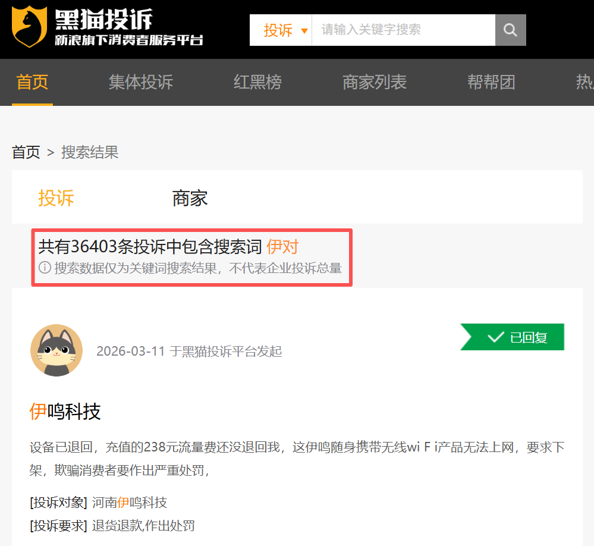

📈 围猎3亿人寂寞的生意，要IPO
The loneliness business targeting 300 million people, heading for an IPO
找对象，从来不是一门新生意。
一边是近 3 亿单身男女被催婚，婚恋从“顺其自然”变成“必须解决patch[pæʧ] v. 修补；解决；掩饰”的刚需；一边是没人想到的暴利，不拼算法推荐commend[kəˈmɛnd] v. 推荐；称赞；把…委托、不烧广告投放，而是把“情绪价值”做成可付费的产品。就在这种错位之中，一家公司establishment[ɪˈstæblɪʃmənt] n. 确立，制定；公司；设施把看似最土、最不被看好的“相亲生意”，做成了一台稳定印钞机。
近日，当不少人还在过愚人节时，港交所的一则披露，打破breach[briʧ] v. 违反，破坏；打破了资本市场的平静。伊对 APP 母公司米连科技再次递交招股书，二次冲击“在线情感emotion[ˈiˌmoʊʃən] n. 情绪,情感,感情社交第一股”。时间点很微妙，但数据不开玩笑fool[ful] v. 欺骗；开玩笑；戏弄，2025 年营收突破 41.22 亿元，期内利润达到 5.19 亿元。更关键的是，它赚钱的方式几乎反直觉，没有大规模广告变现，没有复杂会员体系，核心收入来自用户在相亲场景中的互动消费——虚拟礼物、连麦聊天、情绪陪伴accompany[əˈkəmpəni] v. 陪伴，陪同,伴随；伴奏。
在这场资本盛宴的幕后，除了小米、顺为、蓝驰等明星机构，最引人注目dramatic[drəˈmætɪk] adj. 戏剧的；急剧的；引人注目的；激动人心的的莫过于创始人任喆。这位出身 IBM 、甲骨文的顶级精英，带着哈工大硕士的硬核标签，却在一头扎进县城相亲直播间后，活成了中国最赚钱的“电子amplifier[ˈæmpləˌfaɪər] n. [电子] 放大器，扩大器；扩音器媒婆”。
当一线互联网公司，还在争夺compete[kəmˈpiːt] v. 竞争；争夺，竞争一二线城市的流量时，他选择去更低线的市场，做更“土”的需求，然后用更直接的付费机制，把这门生意做深、做透。
一、米连科技的起点，并不传奇legend[ˈlɛʤənd] n. 传说,传奇。
没有天才genius[ˈʤinjəs] n. 天才光环，也没有一夜爆红。任喆、朱晓朴，两位燕山大学校友，典型的技术出身，一个走过 IBM 、德勤、甲骨文，一个在摩托罗拉干过多excess[ˈɛkˌsɛs] n. 过多，过量年，但创业路径并不顺。2011 年，两人第一次创业，做的是社交+旅游，结果显而易见gross[groʊs] adj. 总共的；粗野的；恶劣的；显而易见的：失败了。但在这次折戟中，他们开始意识到alert[əˈlərt] v. 警告；使警觉，使意识到，“社交”这件事，远没有看起来那么简单。
真正的authentic[əˈθɛnɪk] adj. 真正的，真实的；可信的转折发生在 2015 年。他们重新出发，盯上了一个更底层的underneath[ˌəndərˈniθ] adj. 下面的；底层的需求——婚恋。但问题很快出现，市场已经有一堆平台，探探、陌陌、世纪佳缘……模式成熟，用户习惯固定anchor[ˈæŋkər] v. 抛锚；使固定；主持节目。如果照着做，基本没有机会occasion[əˈkeɪʒən] n. 时机，机会；场合；理由。于是accordingly[əˈkɔrdɪŋli] adv. 因此，于是；相应地；照著他们干了一件很关键的事，不去一线城市卷，而是直接下沉。
他们把目标objective[əˈbʤɛktɪv] n. 目标,目的人群锁定在三四线城市，30 岁左右的普通人。这群人有一个共同特点accent[ˈækˌsɛnt] n. 口音；重音；强调；特点；重音符号，社交圈小、工作忙、但结婚压力更大。需求真实，但供给不足defect[ˈdifɛkt] n. 过失;缺点;不足，更关键的是，这群人不太擅长“主动社交”。滑一滑glance[glæns] n. 一瞥；一滑；闪光、聊两句这种模式，对他们来说门槛反而更高。他们发现传统的classical[ˈklæsɪkəl] adj. 古典的；经典的；传统的；第一流的颜值社交在县城根本玩不转，那里的人更相信“中间人”的撮合。于是，他们把老祖宗流传currency[ˈkərənsi] n. 通货，货币；流传，通行了几千年的“媒婆”模式，原封不动地搬进了直播间。
一开始commence[kəˈmɛns] v. 开始，他们也试过主流路径。文字聊天chin[ʧɪn] n. 下巴；聊天；引体向上动作没人聊，语音互动有人但不付费，直到最后一步上视频。成本更高，但效果出来了，用户开始停留，开始互动，更重要的crucial[ˈkruːʃl] adj. 重要的；决定性的；定局的；决断的是——开始付费。他们不再试图用高深莫测的算法去重塑社交，而是用最原始、最直接的“视频见个面”解决了信任dependence[dɪˈpɛndəns] n. 依靠， 依赖； 信任难题。于是，一个非常奇特的fancy[ˈfænsi] adj. 想象的；奇特的；昂贵的；精选的产品形态出现了，“红娘+视频+直播”的三方相亲模式。
一个红娘，一个男嘉宾，一个女嘉宾，三方视频连线，实时realtime[ˈriːəltaɪm] adj. 实时撮合。这套模式看起来简单，但解决了一个关键hinge[hɪnʤ] n. 铰链，折叶；关键，转折点；枢要，中枢问题：破冰。对很多普通用户来说，“怎么开口第一句话”本身就是门槛，而红娘，相当于correspond[ˌkɔrəˈspɑnd] vi. 通信；符合， 一致；相当于， 对应帮你把这一步做掉了。从那一刻开始inaugurate[ˌɪˈnɔgjəˌreɪt] vt. 开始， 开展；为…举行就职典礼， 使正式就任；为…举行开幕式， 为…举行落成仪式，这家公司就不再只是“交友平台”，而是一个在线婚恋撮合系统。到了 2018 年，主打产品伊对的月活瞬间instant[ˈɪnstənt] n. 瞬间；立即；片刻冲破了 100 万。
这一步pace[peɪs] n. 一步；步速；步伐；速度，让这门生意彻底接通了地气。这种“降维打击buffet[ˈbəfət] n. 自助餐；小卖部；打击；猛烈冲击”带来的不仅是用户，更是资本的疯狂入场。从小米、顺为到蓝驰创投，明星机构apparatus[ˌæpərˈætəs] n. 器械，器具，仪器；机构，组织看中的，正是这种精英思维对传统媒婆行业的“数字化改造”。
两个大厂校友，从失败的社交创业，到抓住下沉市场婚恋刚需，用“线上红娘”这个土味创新，硬生生把一款小众相亲APP，干到了月活千万级的赛道龙头cock[kɑk] n. 公鸡；龙头；雄鸟；头目，如今更是站在了港交所的门前，这份逆袭，足够惊艳。
二、41亿收入proceed[pərˈsid] n. 收入，获利背后，米连科技到底凭什么这么赚钱？
秘密就在于，它那套被外界戏称为“围猎寂寞”的商业commerce[ˈkɑmərs] n. 买卖，贸易；商务；商业闭环。
走进伊对的直播间，你会看到一个呈“品”字形zigzag[ˈzɪgzæg] n. 之字形；Z字形的排布。上方是红娘，也可以理解absorb[əbˈzɔrb] v. 吸收；吸引；承受；理解；使…全神贯注为主持人，下方是男女嘉宾。这 18 万名红娘并非米连的员工，而是由普通ordinary[ˈɔrdəˌnɛri] n. 普通；平常的人（或事）用户转化而来的“兼职猎人”。她们可能是白天的农妇，也可能是晚上的超市收银员cashier[kæˈʃɪr] n. 出纳员；司库；收银员，只要能说会道、会调动气氛，就能在平台上赚到钱。
如果只看用户规模，米连科技并不算夸张exaggerate[ɪgˈzæʤərˌeɪt] v. 夸大， 夸张。截至 2025 年底：平均月活 1030 万，日活 220 万，月付费用fare[fɛr] n. 票价；费用；旅客；食物户 120 万。放在互联网里，这不是顶级流量，但关键在于consist[kənˈsɪst] v. (in)在于；(of)由…组成,由…构成，变现效率极高。2023 到 2025 年，公司收入从 10.34 亿→ 23.73 亿→ 41.22 亿，几乎practically[ˈpræktɪkəli] adv. 实际地；几乎；事实上每年翻倍；净利润从亏损deficit[ˈdɛfəsət] n. 赤字,逆差;亏损,亏空;不足,缺乏转正，到 5.19 亿；毛利率一路提升elevate[ˈɛləˌveɪt] v. 提拔,提升...的职位；举起到 50.6%。
2025 年，98.8% 的收入skim[skɪm] n. 撇；撇去的东西；表层物；瞒报所得的收入，来自虚拟物品和互动功能。简单说，就是送礼物、开通话、买互动interaction[ˌɪntərˈækʃn] n. 互动。会员？占比只有 1.2%，几乎可以忽略neglect[nɪˈglɛkt] v. 忽视，忽略。这意味着spell[spɛl] v. 拼，拼写；意味着；招致；拼成；迷住；轮值什么？它不是订阅subscribe[səbˈskraɪb] v. (to)订阅，订购生意，而是“即时付费”生意。逻辑logic[ˈlɑʤɪk] n. 逻辑,逻辑学完全变了。传统heritage[ˈhɛrɪtɪʤ] n. 遗产,继承物;传统婚恋平台赚的是“服务费”，一次性、周期长；伊对赚的是“过程的钱”，每一次聊天、每一次互动，都可以变现。
米连科技，极其精明地设计contrive[kənˈtraɪv] v. 设计；发明；图谋了一套收入分成机制，比例在 20%—52% 之间。这意味着spelling[ˈspɛlɪŋ] v. 拼写；意味着（spell的ing形式）；迷住，红娘每引导男嘉宾送出一份“虚拟礼物”，她就能分到近一半的收益。这种模式，极大地激发了红娘的战斗力，她们会不断制造话题、缓解尴尬，甚至利用男性的masculine[ˈmæskjələn] adj. 男性的；阳性的；男子气概的表现欲，诱导其打赏以展示诚意。比如想连线，先花钱；想多聊，继续pursue[pərˈsu] v. 继续；从事；追赶；纠缠花钱；想加联系方式alike[əˈlaɪk] adv. 以同样的方式；类似于，再花一笔。
整个altogether[ˌɔltəˈgɛðər] n. 整个；裸体过程，被拆成无数个“小付费点”。这种“碎银子”模式看似客单价低，但频率极高、决策门槛极低，一旦用户进入那种被红娘烘托出的“准相亲”氛围，充值就成了一种近乎本能的gut[gət] adj. 简单的；本质的，根本的；本能的，直觉的社交刚需。甚至连获取对方微信这种基础操作，平台都要收一笔不菲的“解锁服务费”，且这部分highlight[ˈhaɪˌlaɪt] n. 最精彩的部分纯利润平台不与红娘分成。
结果consequence[ˈkɑnsəkwəns] n. 结果,后果,影响就是，用户在花钱，红娘在赚钱，平台在抽成；三方利益avail[əˈveɪl] n. 效用，利益被绑定，形成一个闭环。
三、当一个生意过分依赖depend[dɪˈpɛnd] v. 依赖，依靠；取决于；相信，信赖人性的弱点，为什么这种模式能成立？答案很直接，人太多，需求太强。数据显示，中国单身人口接近approximate[əˈprɑksəˌmeɪt] v. (to)接近 3 亿。25-35 岁是主力，占比超过exceed[ɪkˈsid] v. 超过,胜过；越出 (限制、规定) 60%。而另一组更现实的realistic[ˌriəˈlɪstɪk] adj. 现实的；现实主义的；逼真的；实在论的数据是，一线城市结婚成本接近 178 万元，超过 36% 的年轻人认为婚姻是“高风险投资”。一边是成本costing[ˈkɒstɪŋ] n. 成本高，一边是压力大。结果就是，越来越多人被困在“想结婚但找不到人”的状态shatter[ˈʃætər] n. 碎片；乱七八糟的状态里。
需求不会消失，只会转移avert[əˈvərt] v. 防止，避免；转移(目光、注意力等)。从线下相亲角，到线上直播间，本质entity[ˈɛntɪti] n. 实体；存在；本质是同一件事。而米连科技抓住的，是一个更细分但更真实的lively[ˈlaɪvli] adj. 活泼的；生动的；真实的；生气勃勃的群体——下沉市场的严肃婚恋需求。这里没有精英滤镜，也没有复杂complication[ˌkɑmpləˈkeɪʃən] n. 并发症；复杂；复杂化；混乱社交，只有一个很直接的目标，找对象。在这个前提下，“付费换效率”就变得可以接受acceptance[əkˈsɛptəns] n. 正式接受；接纳；接受，赞同，赞成，认可。
但也正是在这里，争议开始出现arise[əraɪz] v. 出现；上升；起立。打开消费者投诉complain[kəmˈpleɪn] v. 投诉；发牢骚；诉说平台，画风却截然不同。黑猫投诉上，关于“诱导消费”、“虚假宣传agitate[ˈæʤəˌteɪt] v. 煽动，鼓动；宣传”的投诉层出不穷。不少男性用户在豪掷千金后才发现discover[dɪˈskəvər] v. 发现，屏幕对面的温情脉脉，或许只是红娘为了分账而精心排演的剧本。

更具讽刺意味的chocolate[ˈʧɔklət] adj. 巧克力色的；巧克力口味的是，这种模式被不少媒体解读为“围猎男性”。在某些极端的案例里，部分女性用户的目的就是赚钱，她们更倾向于使用单价更高的语音和视频，当男方表达爱意后，她们会以各种借口“吊着”，却不私下加微信，只为了赚取源源不断的continual[kənˈtɪnjuəl] adj. 不断的,连续的；频繁的礼物分成。
当然，监管regulatory[ˈreɡjələtri] adj. 监管的红线也正在收紧。随着《互联网婚恋交友服务管理administer[ədˈmɪnɪstər] v. 管理；执行；给予规定》的实施，行业合规成本上升。虽然米连科技在招股书中强调已采取adopt[əˈdɑpt] v. 采取；接受；收养；正式通过检测和过滤措施，但其也坦承无法完全识别所有不当内容或非法欺诈。这种基于“打赏分成”的商业模式，天然带有“灰黑产”入侵的隐患，中国裁判文书diploma[dɪˈploʊmɑ] n. 毕业证书，学位证书；公文，文书；奖状网上多起诈骗案均与此类平台相关。
大家最感兴趣的话题永远是，做红娘真的能发财吗？对于那 18 万红娘来说，这确实是下沉dip[dɪp] n. 下沉，下降；倾斜；浸渍，蘸湿市场少有的高薪兼职，但对于平台来说，这更是一门稳赚不赔的抽成买卖。这些问题，并不是米连科技独有，而是整个行业的共性。但当公司走向 IPO ，这些问题就会被放大amplify[ˈæmpləˌfaɪ] v. 放大，扩大；增强；详述。
表面exterior[ɪkˈstɪriər] n. 外部；表面；外型；外貌看，米连科技卖的是“交友服务”。但更底层，它卖的是三样东西clay[kleɪ] n. [土壤] 粘土；泥土；肉体；似黏土的东西：陪伴、希望、以及效率。陪伴让人停留abide[əˈbaɪd] v. 忍受，容忍；停留；遵守，希望让人付费，效率让平台赚钱。这套逻辑，本身没有问题。真正的genuine[ˈʤɛnjuˌaɪn] adj. 真正的问题在于，当一段关系的建立，越来越依赖“付费触发”，当一次心动，可以被拆分成多个收费节点，我们是在更高效地找到爱情，还是在一个更精密的系统里，被不断引导消费？
而答案，可能不只属于belong[bɪˈlɔŋ] v. 属于，应归入；居住；适宜；应被放置一家公司。